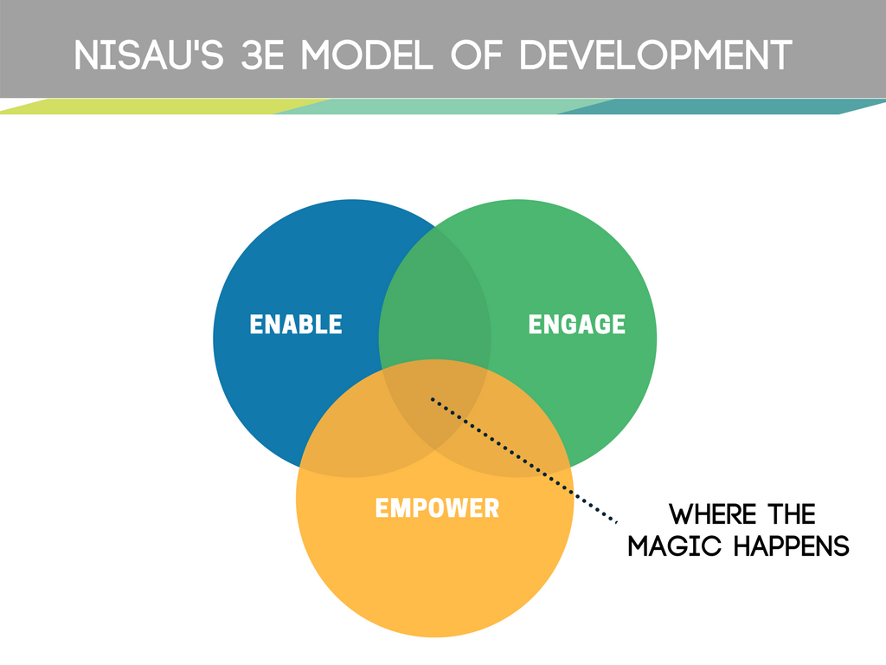

Our Vision
Positive contribution to the UK, to India and the Indo-British relationship via youth of India origin living in the UK.
Our Aims
The definitive reason for our existence is to represent you, the UK's young Indian diaspora. We are a unity project, an international platform, and an advisory council all in one!
Our foremost aim is to become the representative voice of Indian origin students and alumni in the United Kingdom and provide a platform that enables this young diaspora talent pool to engage with institutions, causes, ideas and people with a united, yet diverse front.
We aim to:
- Become the representative voice of Indian students looking to pursue their Higher Education in the UK, or students who are currently studying at educational institutions in the UK, or alumni who have graduated from educational institutions in the UK,
- Support Indian students during their higher education in the UK — academically, professionally and personally (pre, during and post their studies),
- Bring together all Indian students, student societies, alumni and young professionals who may not have studied in the UK, on one, national platform,
- Develop future leaders, role models and ambassadors in the UK and in India,
- Develop a unique ecosystem enabling UK's young Indian diaspora to share their global experiences in and with India, thus contributing to India's socio-economic development and transition to a knowledge economy,
- Promote and celebrate Indian culture in the UK, upholding its core principles: 'truth always prevails', 'unity in diversity' and 'the world is a family',
- Bridge any educational, cultural and knowledge gap between India and the UK, through the uniquely placed young Indian diaspora,
- To promote British Higher education in India, Indian Higher Education in the UK and increase student exchange between both countries,
- To further the Indo-UK relationship.
Our Values
Our Fundamental beliefs define us
Our values define who we are. They are the fundamental beliefs of our organisation. They guide our actions and behaviour. They influence the way we work with each other, the way we represent our members, the way we engage with our local communities in Britain, and with India.
Every day, each one of us makes choices that directly affect the way India, and its citizens are viewed in the United Kingdom. Every decision we make and every action we take directly impacts the way our communities experience us.
Therefore, it is both our responsibility to ensure that we can do justice to representing true, contemporary India when we are in the UK, and to help further the historical ties that these two great nations have shared. We believe that it is possible to do well, by doing good.
Our values help us define paths that can help us to stay true to this fundamental belief. They helped us come up with the concept of NISAU, and they help us every day, as we build further our platform to help the young Indian diaspora engage with India and the United Kingdom in meaningful and impactful ways.
Ultimately, our core values and guiding principles help us in achieving our vision of positive contribution to our two great nations, and to an even stronger bilateral relationship.
Our Future Leaders programme, enables us to recognise, celebrate and provide opportunities to those young individuals in our team and our wider communities who consistently live by these values and demonstrate commitment to our two nations, furthering their friendship.
This programme is an important way in which we are building our shared culture, founded on our strong commitment to our values.
Our Guiding Principles
Satyamev Jayate - truth always prevails
Vasudheva Kutumbakam - the world is a family
Unity in Diversity
Mission to Action

Engaged
We want to provide a platform for our young diaspora Indian target demographic to engage with our two great nations in a much more meaningful way. This comes through transferring knowledge of best practice, knowledge of ancient techniques such as Yoga and Ayurveda,
cross-border collaboration, diaspora youth engagement with initiatives of the Indian government, and more. It also includes developing a deep understanding of the socio-economic issues that continue to plague India and critically, by encouraging thought and discussion on how India's diaspora youth can get involved to help make a difference.
Enabled
We want to provide a platform for our young diaspora Indian target demographic to have access to all the knowledge they know they need, and that which they may not otherwise be aware of, in order they are enabled to represent India in the United Kingdom and the United Kingdom in India, to the best of their abilities.
This includes, for example, good knowledge of both the challenges and the opportunities that exist in India so that brain drain post education abroad is minimised for India, so that our members can accurately talk about India in everyday, or more formal conversations, so that tourism in India can be promoted. It also includes accurate
knowledge that cuts past excessively negative rhetoric about immigration in the United Kingdom, especially in a post-Brexit world, and thus allows our members to put forth a true and unbiased representation of the UK.
Empowered
We want to provide a platform for our young diaspora Indian target demographic such that they feel empowered to analyse critically, voice their opinions without fear, debate, discuss and participate in nation building. They feel empowered by their knowledge, experience and safety net provided by NISAU.
Support Structure
We provide a two-tiered support structure to address the varied requirements of the Indian student and alumni community in the UK -
- Society Support
- As the Umbrella body of Indian and India-related student societies in the UK, we provide a support network and escalation route for our local campus teams. Support includes but is not limited to Government Liaison, Events, Media and Corporate Liaison, PR, Inter and Intra-society conflict resolution et al.
- At universities with sizeable Indian populations, we also create societies dedicated to Indian students.
- Student and Alumni Support
- Support the Indian youth throughout their educational journey in the UK — pre-arrival, during their stay as students and post-graduation as alumni of the UK
- Help students and alumni caught up in issues such as those of Immigration and Bogus Colleges. Please note that the NISAU does not provide legal assistance or representation but can connect you to relevant stakeholders or provide non-legal guidance
- Support students and alumni in developing their professional skills through offering internships and career advice with the aim of generating skilled professionals for the Indian and British economies
- Support students and alumni through their personal journey in the UK
- Voluntary Work - promoting charitable ethos and work ethics
Activities
Notable Activities
- Led the largest ever UK youth delegation to the Pravasi Bharatiya Divas 2017
- Raising awareness about issues surrounding international Indian students in the UK
- Supporting students who have suffered distress
- Participating in, and shaping, the discussion on current and future immigration policy
- Westminister Legal Policy Forum - first advocators of the Tier 5 intern visa
- Westminister Higher Education Policy Forum
- All Party Parliamentary Group on PSW visa
- All Party Parliamentary Group on International Students
- In the media
- Promoting the UK as a great place to study - separating facts from negative rhetoric
- Helping stop visa abuse
- Advocating for improved visa conditions — see details on our campaign #FairVisaFairChance
- Campaign encouraging commonwealth youth vote in the UK Parliamentary elections 2015 — see our campaign #MyVoteMatters
- Commissioned exclusive research project into the 'Experiences of Indian Students in the UK' by London & Partners (official agency of the Mayor of London)
- Only Youth organisation worldwide to be invited by the Indian Government to speak at (amongst other events):
- Regional Pravasi Bharatiya Divas (London, October 2014)
- Pravasi Bharatiya Divas (Gujarat, January 2015)
- Pravasi Bharatiya Divas (London, January 2016)
- Pravasi Bharatiya Divas Detailed Engagement with Minister of External Affairs & Minister of Human Resource Development (Delhi, September 2016)
- Pravasi Bharatiya Divas (Bengaluru, January 2017)
- Invited to deliver thought leadership to the Indian and UK Governments as well as the International Students Association in Australia
- NISAU and NISAU affiliate societies were official Welcome Partners for PM Modi's UK visit and our President was appointed the Official Media Commentator.